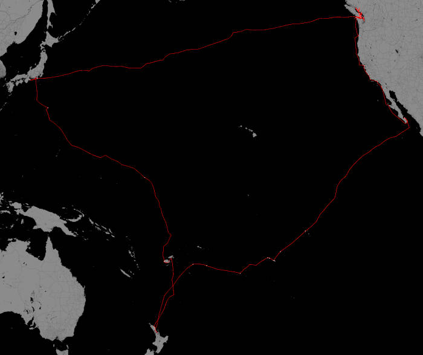

where
Pino's current location:
Victoria, western canada
Since 2016, Pino has travelled 22,912 nautical miles.
From 2016-2020 we circumnavigated the Pacific Ocean. We sailed from Western Canada to the US West coast, Mexico, French Polynesia, Cook Islands, Niue, Tonga, New Zealand, Fiji, The Marshall Islands, Japan and then back to Western Canada.
From 2020-2023 Pino has explored the Salish Sea, to see where we have been see Western Canada.
In 2024, Pino explored the North Coast of British Columbia, and US SE Alaska.
2016-2020 Pacific Route
View the interactive map for details.